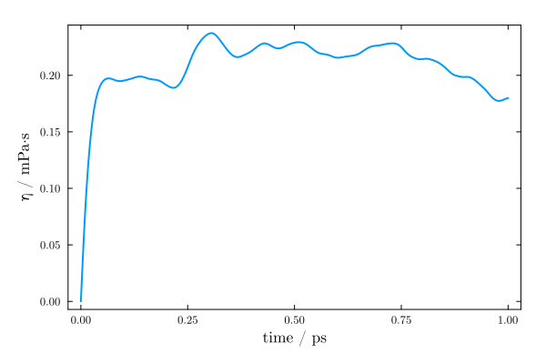

Viscosity (Green-Kubo)
The shear viscosity of a fluid can be computed from the autocorrelation of the off-diagonal components of its pressure tensor, using the Green-Kubo relation:
\[\eta = \frac{V}{k_B T}\int_0^\infty \left< P_{\alpha\beta}(0) P_{\alpha\beta}(t) \right> dt\]
The read_namd_pressure_tensor function reads the pressure tensors printed in the log file of a NAMD simulation, and green_kubo_viscosity computes the autocorrelation function and its running integral.
Running the simulation
NAMD prints the pressure tensor in the log file only if the outputPressure option is set. The autocorrelation of the pressure tensor decays within a few picoseconds in liquid water, thus the tensor must be printed at short intervals, for instance at every step:
outputPressure 1The Green-Kubo integral converges slowly: simulations of several nanoseconds are required for precise estimates. Stochastic thermostats (as Langevin dynamics) affect the dynamics of the system, and thus the viscosity, so the production simulation is preferably run in the NVE ensemble, after equilibration at the desired temperature and pressure.
MolSimToolkit.read_namd_pressure_tensor — Function
read_namd_pressure_tensor(logfile::AbstractString; group_pressure::Bool=false)Reads the pressure tensors printed in the log file of a NAMD simulation. Returns a PressureTensor object, which contains the steps, the tensors (in bar), the time step (in fs), and the average volume (in ų) and temperature (in K) of the simulation, as reported in the ENERGY: lines of the log.
NAMD prints the pressure tensor only if the outputPressure option is set in the input file, for instance with outputPressure 1 to print it at every step. The tensors are then printed in lines of the form:
PRESSURE: step Pxx Pxy Pxz Pyx Pyy Pyz Pzx Pzy Pzz
GPRESSURE: step Pxx Pxy Pxz Pyx Pyy Pyz Pzx Pzy Pzzwhere PRESSURE is the atomic pressure tensor, and GPRESSURE is the group (molecular) pressure tensor, computed from the centers of mass of hydrogen groups.
To compute the viscosity of the system from these tensors with the Green-Kubo relation, use green_kubo_viscosity. For that, the tensors must be printed at short intervals (typically every one to a few steps) relative to the decay time of their autocorrelations, of the order of a picosecond for liquid water.
If a step is printed more than once (as happens when the input file contains multiple run commands), only its first occurrence is kept.
Arguments
logfile::AbstractString: The path to the NAMD log file.
Optional keyword arguments
group_pressure::Bool: Iftrue, the group pressure tensors (GPRESSURElines) are read instead of the atomic ones (PRESSURElines). Defaults tofalse.
Example
julia> using MolSimToolkit, MolSimToolkit.Testing
julia> p = read_namd_pressure_tensor(Testing.namd_pressure_log)
-------------------------------------------------------------------
PressureTensor:
-------------------------------------------------------------------
Number of pressure tensors: 2001
Steps: 0 to 2000
Time step: 2.0 fs
Average volume: 26721.5138 ų
Average temperature: 296.3006 K
-------------------------------------------------------------------
julia> p.tensors[1]
3×3 StaticArraysCore.SMatrix{3, 3, Float64, 9} with indices SOneTo(3)×SOneTo(3):
1693.76 -483.637 -258.105
-483.64 464.369 -144.419
-258.106 -144.43 195.043MolSimToolkit.green_kubo_viscosity — Function
green_kubo_viscosity(
p::PressureTensor;
temperature::Real = p.temperature,
volume::Real = p.volume,
tmax::Real = 10.0,
components::Symbol = :traceless,
parallel::Bool = true,
)Computes the shear viscosity of a system from the autocorrelation of its pressure tensor, using the Green-Kubo relation:
\[\eta = \frac{V}{k_B T}\int_0^\infty \left< P_{\alpha\beta}(0) P_{\alpha\beta}(t) \right> dt\]
where $P_{\alpha\beta}$ are the off-diagonal (shear) components of the pressure tensor, $V$ is the volume of the system and $T$ its temperature. The pressure tensors are typically obtained from read_namd_pressure_tensor.
Returns a GreenKuboViscosity object, with the time lags (in ps), the autocorrelation function (in bar²) and the running integral of the Green-Kubo relation (the viscosity, in mPa·s), as a function of the upper limit of the integral. The viscosity of the system is estimated from the plateau of this running integral, which must be identified by inspecting the curve: at long times the integral becomes increasingly noisy, since the autocorrelation function is then dominated by statistical noise.
Two estimates of the autocorrelation function can be used, controlled by components:
:offdiagonal: the average of the autocorrelations of the three independent off-diagonal components ($xy$, $xz$ and $yz$) of the symmetrized pressure tensor, $(P + P^T)/2$.:traceless(default): the autocorrelations of all components of the symmetrized, traceless, pressure tensor, $P' = (P + P^T)/2 - \mathrm{tr}(P)/3 \, I$, as $\sum_{\alpha\beta} \left< P'_{\alpha\beta}(0) P'_{\alpha\beta}(t)\right>/10$. For an isotropic fluid this gives the same result as the off-diagonal components, with better statistics (Daivis and Evans, J. Chem. Phys. 100, 541 (1994)).
The time average of each component is subtracted before computing the autocorrelations, and the autocorrelation is averaged over all time origins. The integral is computed with the trapezoidal rule.
The Green-Kubo integral converges slowly with the length of the simulation. For liquid water, simulations of several nanoseconds, with the pressure tensor printed every few femtoseconds, are required for estimates with a precision of a few percent. Viscosities obtained from simulations with stochastic thermostats (e.g. Langevin dynamics) are affected by the friction of the thermostat; NVE simulations, or simulations with weakly coupled thermostats, are preferred.
Arguments
p::PressureTensor: The pressure tensors, as read byread_namd_pressure_tensor. The tensors must be printed at regular step intervals.
Optional keyword arguments
temperature::Real: The temperature of the system, in K. Defaults to the average temperature read from the log file.volume::Real: The volume of the system, in ų. Defaults to the average volume read from the log file.tmax::Real: The maximum time lag, in ps, up to which the autocorrelation function and its integral are computed. Defaults to10.0ps, and is limited to half of the length of the simulation.components::Symbol: Either:traceless(default) or:offdiagonal; see above.parallel::Bool: Defines if the computation of the autocorrelation function is run in parallel. Defaults totrue. Requires starting Julia with multi-threading.
Example
julia> using MolSimToolkit, MolSimToolkit.Testing
julia> p = read_namd_pressure_tensor(Testing.namd_pressure_log);
julia> gk = green_kubo_viscosity(p; tmax=1.0)
-------------------------------------------------------------------
GreenKuboViscosity:
-------------------------------------------------------------------
Number of time lags: 501
Maximum time lag: 1.0000 ps
Viscosity at maximum time lag: 0.1799 mPa·s
-------------------------------------------------------------------
julia> gk.viscosity[end]
0.1799246341696098MolSimToolkit.PressureTensor — Type
PressureTensorPressure tensors of a simulation, as read by read_namd_pressure_tensor.
Fields
steps::Vector{Int}: The simulation steps at which the pressure tensor was printed.tensors::Vector{SMatrix{3,3,Float64,9}}: The pressure tensor at each of these steps, in bar.timestep::Float64: The integration time step of the simulation, in fs.volume::Float64: The average volume of the system, in ų.temperature::Float64: The average temperature of the system, in K.
MolSimToolkit.GreenKuboViscosity — Type
GreenKuboViscosityResult of the Green-Kubo computation of the shear viscosity, as returned by green_kubo_viscosity.
Fields
time::Vector{Float64}: The time lags, in ps.acf::Vector{Float64}: The autocorrelation function of the (shear) pressure tensor components, at each time lag, in bar².viscosity::Vector{Float64}: The running integral of the Green-Kubo relation, that is, the viscosity estimated by integrating the autocorrelation function up to each time lag, in mPa·s (cP).
Example: viscosity of TIP3P water
Here we use a short NAMD simulation of 900 TIP3P water molecules, included in the MolSimToolkit.Testing test data (2000 steps of 2 fs, with the pressure tensor printed at every step). The simulation is much too short for a converged estimate of the viscosity, but illustrates the use of the functions:
using MolSimToolkit, MolSimToolkit.Testing, Plots
p = read_namd_pressure_tensor(Testing.namd_pressure_log)-------------------------------------------------------------------
PressureTensor:
-------------------------------------------------------------------
Number of pressure tensors: 2001
Steps: 0 to 2000
Time step: 2.0 fs
Average volume: 26721.5138 ų
Average temperature: 296.3006 K
-------------------------------------------------------------------gk = green_kubo_viscosity(p; tmax=1.0)-------------------------------------------------------------------
GreenKuboViscosity:
-------------------------------------------------------------------
Number of time lags: 501
Maximum time lag: 1.0000 ps
Viscosity at maximum time lag: 0.1799 mPa·s
-------------------------------------------------------------------plot(MolSimStyle,
gk.time, gk.viscosity,
xlabel="time / ps", ylabel="η / mPa⋅s",
linewidth=2, label=nothing,
)
The viscosity is estimated from the plateau of the running integral, for example by averaging it over a range of time lags in which it is approximately constant:
using Statistics: mean
mean(gk.viscosity[gk.time .> 0.5])0.21172083424786833